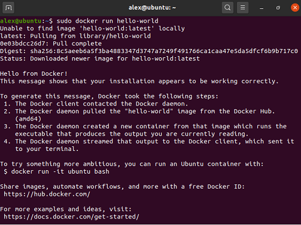
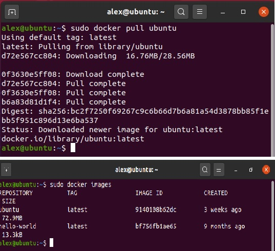
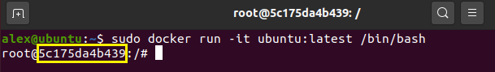
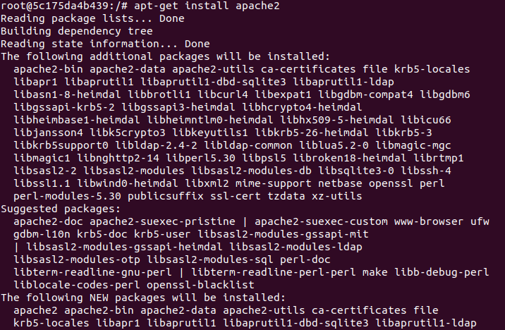
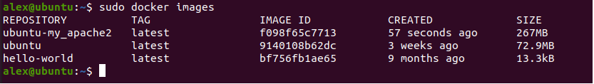
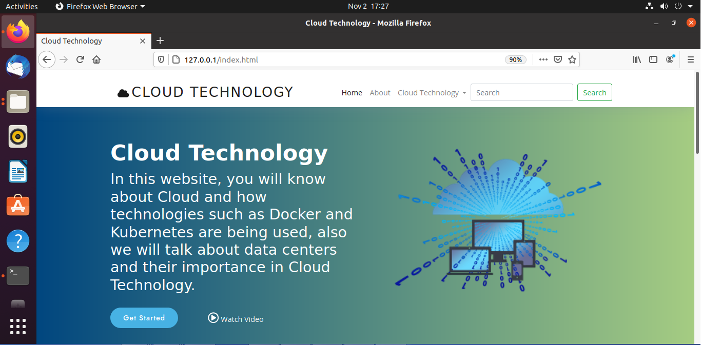

-
We will divide this tutorial into a series of different steps, which are going to be described below:
-

1. Install Docker Engine
In this tutorial, we will install Docker on Ubuntu 20.04.
To install Docker on Ubuntu we have to type the following command in the terminal.sudo apt install docker.io
Now we have to enable Docker through the following command:
sudo systemctl enable --now docker
Finally we can check if Docker is correctly working running the following command:
sudo docker run hello-world
You can check steps described above in the following video: Docker installation
2. Pull an Ubuntu image from Dockerhub.
After logging into Docker pull the ubuntu image using the command below:
sudo docker pull ubuntu
Now we are going to be able to check the existing Docker images that we have in our computer using the command:
sudo docker images
We can find more information about this process in this link: Pull Ubuntu images3. How To Commit Changes To A Docker Image
In this step we have to run the Ubuntu image to start a Docker container and then log into this Ubuntu container using the following command:
sudo docker run -it ubuntu:latest /bin/bash
From the picture, we can identify the container ID, which is “5c175da4b439”
Now we are going to update our Ubuntu container to be able to install more applications through the following command:
apt-get update
Once we have updated our operative system we are going to be able to install our Apache server using the following command:
apt-get install apache2
Also we have to install Vim text editor using the command:
apt-get install vim
Now we have check our container using the command below:
docker ps -a
After we check the container we are going to create a new Docker image using the following command:
docker commit "Container ID" ubuntu-my_apache2
Finally we are going to check if everything we did is ok checking the new images we add using the command:
docker images
You can find more information about this process in the following link: Docker Commits4. Share Data Between a Docker Container and Host.
Once we have set all the components of our Ubuntu operative system and our server. We should share information between our computer and our Docker container so we can storage the files for our project in this directory to be served by our apache server. To do this we have to use the following command:
sudo docker run -it -p 127.0.0.1:80:80 -v "Host directory":/var/www/html ubuntu-my_apache2 /bin/bash
Once we have created this link between this two directories, we have to copy all the files of our project in one of these directories to be served by our apache server.
Finally we have to start the server to be able to have access to our project using the following command:
/etc/init.d/apache2 restart
Cloud Technology